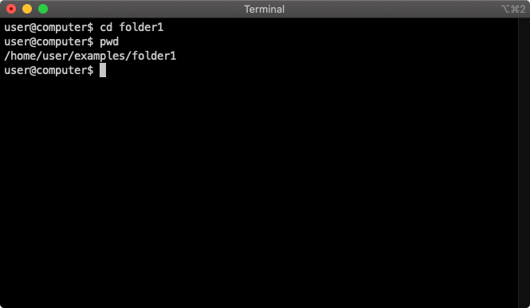
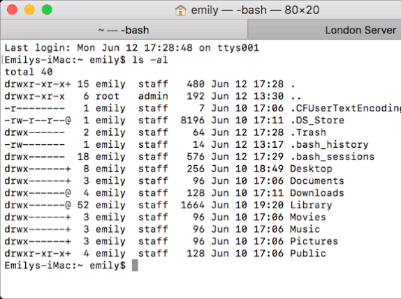
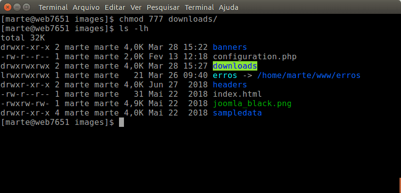

Navegação entre diretórios com cd

Use cd pasta para entrar em um diretório e cd .. para voltar um nível. É essencial para circular pelo sistema de arquivos com rapidez.
Atualizado em .
cd
Use cd pasta para entrar em um diretório e cd .. para voltar um nível. É essencial para circular pelo sistema de arquivos com rapidez.
Atualizado em .
ls
O comando ls mostra os itens da pasta atual, enquanto ls -la inclui arquivos ocultos e detalhes como permissões e tamanho.
Atualizado em .
chmod
Com chmod você altera permissões de leitura, escrita e execução. Tenha cuidado ao aplicar permissões amplas em pastas importantes.
Atualizado em .
| Comando | Função principal | Uso comum |
|---|---|---|
pwd |
Mostra o caminho completo da pasta atual | pwd |
ls |
Lista arquivos e diretórios | ls -la |
cd |
Muda de diretório | cd .. |
mkdir |
Cria uma nova pasta | mkdir projeto |